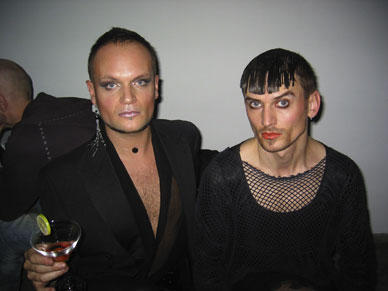

| 25. Oktober 2005 |
Mingel från filmfestens öppning

Tina Trash och Dennis Agerblad från The Dunst performancegrupp
QX.se
25/10 2005
http://www.qx.se/nyheter/artikel.php?artikelid=3983
Print denne side
|
||
| Copenhagen Gay & Lesbian Film Festival 2005 Mingel från filmfestens öppning  Tina Trash och Dennis Agerblad från The Dunst performancegrupp QX.se 25/10 2005 http://www.qx.se/nyheter/artikel.php?artikelid=3983 |
||
Print denne side |